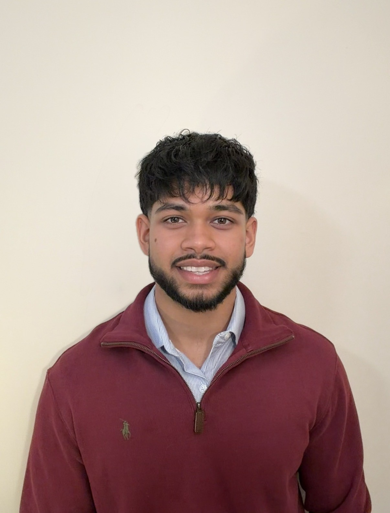
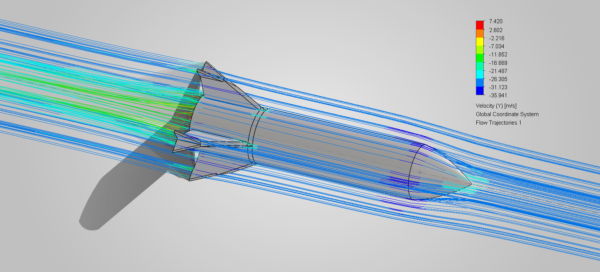
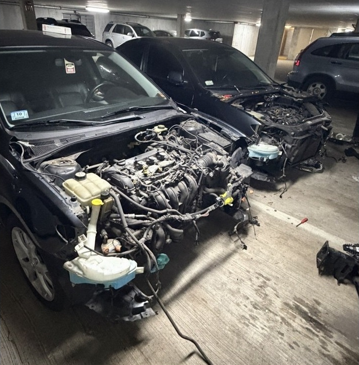
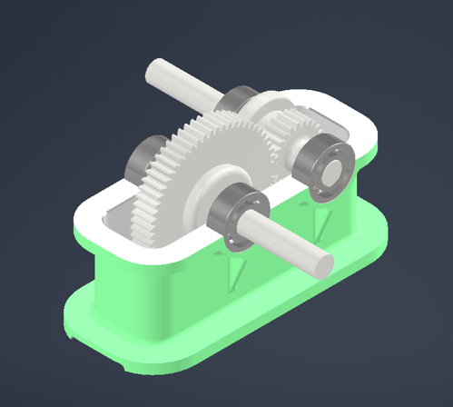
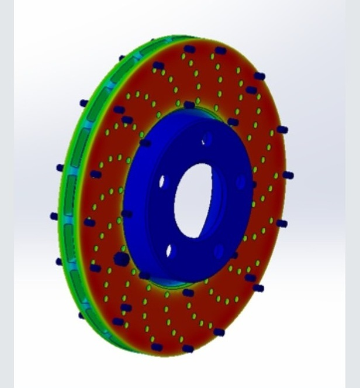

About Me
I enjoy being the person people call when the answer isn't obvious.
Whether it's figuring out why something isn't working, finding a better way to design a system, or taking on a challenge I've never faced before, I enjoy breaking down complex problems and understanding how every component works together. I'm driven by curiosity, hands on experience, and the opportunity to develop practical solutions that make a meaningful impact.
My co-op experiences across different industries have helped me develop a well rounded engineering background, contributing to projects spanning mechanical design, industrial processes, and project engineering. These experiences have strengthened my technical skills, broadened my approach to problem solving, and taught me how to quickly adapt to new industries, systems, and processes.
Outside of my professional experience, I enjoy hands on projects that challenge me to learn new skills, whether through engineering design, prototyping, or working on my car. I'm always looking for opportunities to expand my knowledge, improve my abilities, and grow as an engineer.
Projects

CFD and Wind Tunnel Analysis of Rocket Winglets
Fall 2026
Explore case study ↗
Front-End Rebuild of Totaled Mazda 3
Spring 2026
Explore case study ↗
Single-Stage Spur Gearbox Design
Fall 2025
Explore case study ↗
Brake Rotor Design and Thermal Analysis
Spring 2025
Explore case study ↗Professional Experience
Solenis · Technical Sales Co-op
Sep 2026 – PresentAt Solenis, I work as a Technical Sales Co-op alongside application engineers, supporting process optimization and performance evaluations at a pulp and paper manufacturing facility. I collect production samples and perform lab testing across two paper machines to assess operating conditions and treatment effectiveness. I am also leading a specialty chemical application and sales project, evaluating five KPIs to investigate deposition-related issues and determine optimal treatment rates. Through this work, I support data driven recommendations aimed at improving operational efficiency, product quality, and process reliability while identifying opportunities for increased sales.
Vanderweil · Fire Protection Engineer Co-op
Boston, MA · Jan 2026 – Apr 2026At Vanderweil Engineers, I worked as a Fire Protection Engineer Co-op, independently developing fire alarm and sprinkler system layouts in Revit and producing BIM models and construction drawings. I applied NFPA and IBC codes across projects, including luxury high-rises, mission-critical data centers, and more, while collaborating with other engineering teams to resolve clashes and ensure coordinated, code-compliant designs.
Integra Mission Critical · Project Engineer Co-op
Austin, TX · May 2025 – August 2025At Integra Mission Critical, I worked as a Project Engineer Co-op supporting the delivery of a 235,000 sq. ft. 48 MW data center. I managed RFIs and submittals, led coordination meetings with engineering and architectural teams to resolve technical issues, and conducted site visits to verify construction progress. I also performed installation and QA/QC checks on critical systems, including diesel generators, chillers, and PMDCs, helping to identify issues and support a smooth turnover process.